Determinanți sociali, comportamente de risc și grupuri vulnerabile
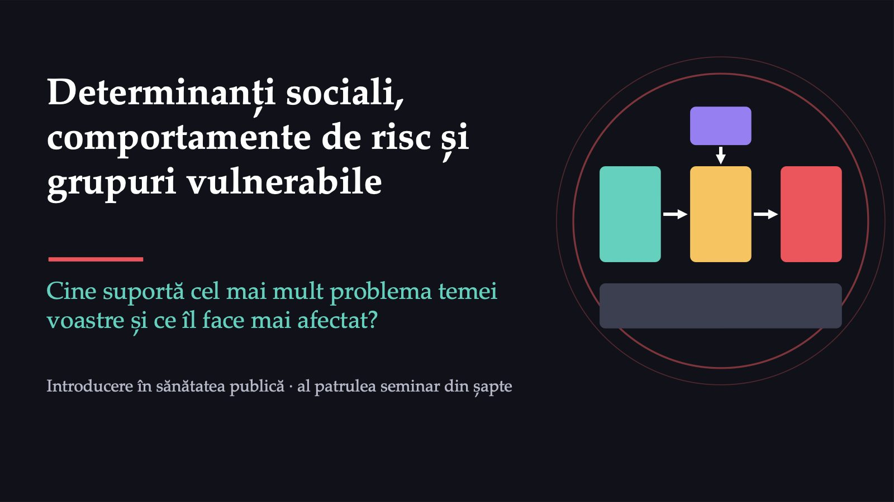
1 / 42Bună ziua. La curs ați desenat harta cauzelor unei probleme naționale. Azi desenați harta pentru tema echipei voastre și spuneți cine este cel mai afectat de problemă, cu o cifră dintr-o sursă oficială.
De la curs la seminar
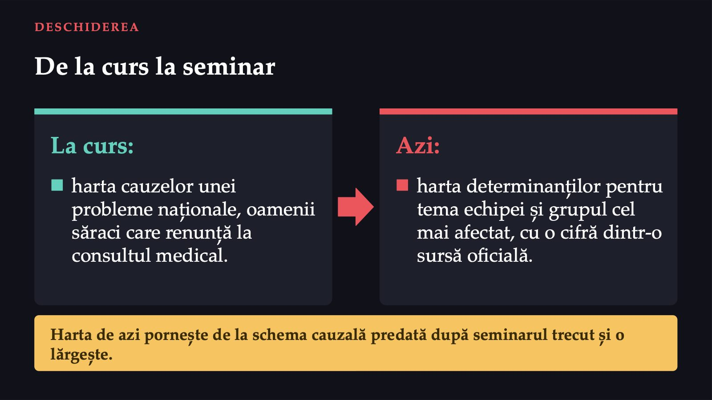
2 / 42Orice raport de sănătate publică face, după harta cauzelor, un pas în plus: spune cine suportă cel mai mult problema, cu ce cifră și cât de sigură este cifra. Pasul acesta îl faceți azi, pentru tema pe care echipa o lucrează din primul seminar.
Ce faceți azi este meseria analistului
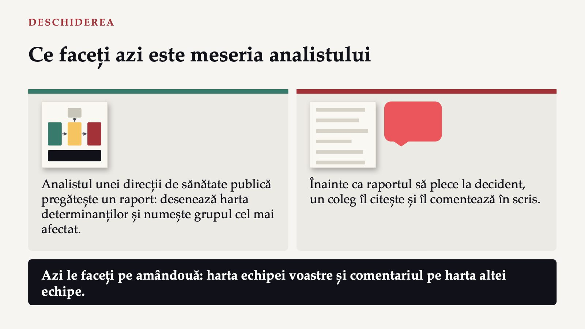
3 / 42Comentariul colegului este partea a doua a seminarului: reacția scrisă pe harta altei echipe, precisă, cu argumente și fără verdict.
Ce produceți și ce predați
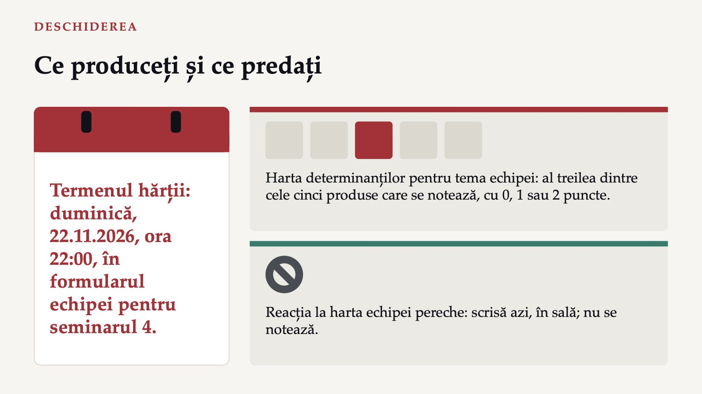
4 / 42Ce nu terminați în sală continuați acasă, până la termen. Harta pe care o predați este cea refăcută după reacția primită de la echipa pereche, acolo unde reacția v-a convins.
Planul seminarului (minutele sunt orientative)
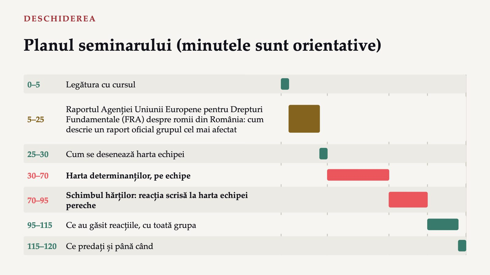
5 / 42Cea mai mare parte a seminarului este a echipelor: întâi harta, apoi reacția la harta altei echipe. Prima parte pregătește harta pe un raport real.
Modelul de azi: un raport real
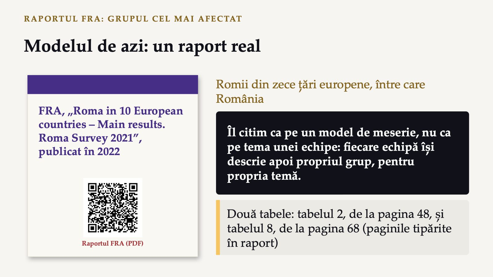
6 / 42Raportul este în limba engleză și se găsește pe situl FRA; adresa lui este în Pregătire. Nu citim tot raportul, ci numai cele două tabele pentru România. Ne interesează felul în care un raport oficial descrie grupul cel mai afectat.
Tabelul 2: speranța de viață la naștere estimată pentru 2017, în România, în ani
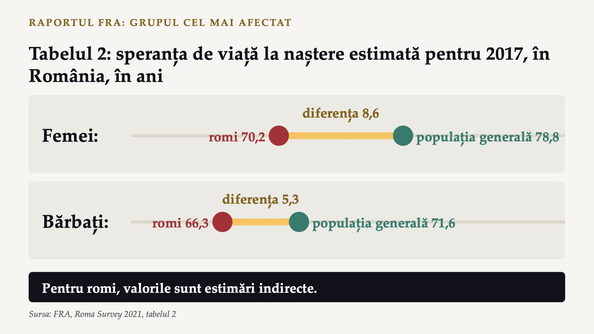
7 / 42Acesta este primul tabel. Citiți-l așa cum l-ar citi cineva care trebuie să scrie despre el o frază într-un raport.
62
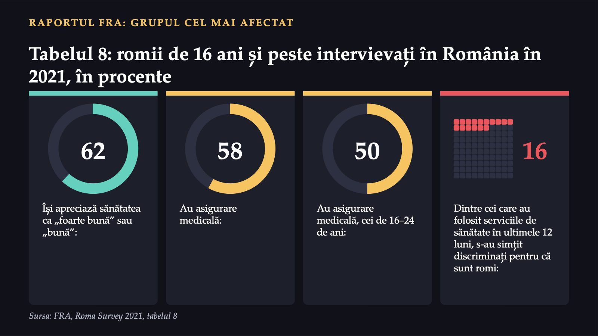
8 / 42Al doilea tabel are trei indicatori, iar asigurarea medicală are și un rând separat pentru cei de 16–24 de ani. La fiecare rând, observați din ce populație se calculează procentul.
Pentru voi, pe hârtie: cele cinci informații
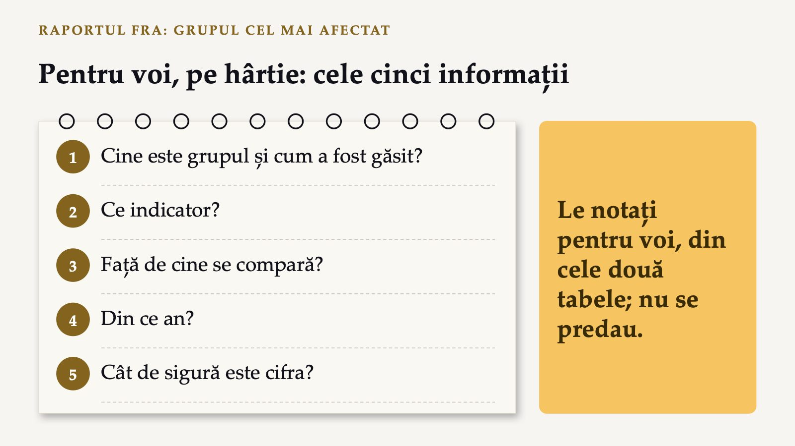
9 / 42Acestea sunt cele cinci informații pe care le caută orice cititor atent al unui raport. Le notați pentru voi; nu se predau și nu se notează. Pe harta echipei le veți scrie apoi pentru grupul vostru.
Ați scrie o notă de o pagină pentru primăria unei comune în care trăiește o comunitate de romi. Ce cifră din cele două tabele ați pune prima și de ce?
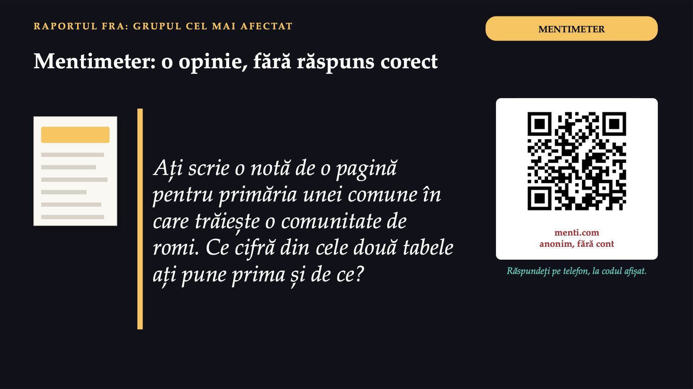
10 / 42La această întrebare contează argumentul, nu cifra aleasă. Răspunsurile sunt anonime.
Contează argumentul, nu cifra aleasă
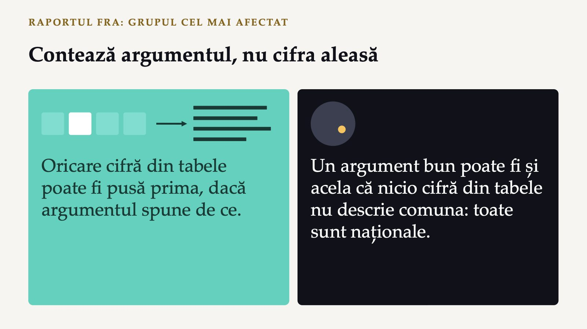
11 / 42O cifră națională nu spune ce se întâmplă într-o comună anume. Pentru nota către primărie, aceasta este limita pe care o scrieți lângă cifră.
1. Cine este grupul și cum a fost găsit
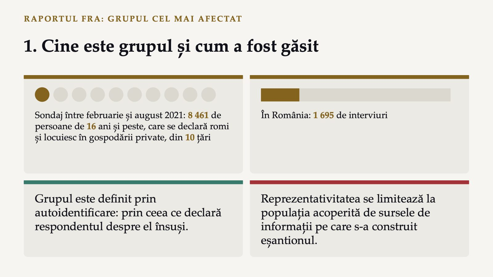
12 / 42Acesta este primul lucru pe care îl spune un raport bun despre grupul cel mai afectat: cum a fost găsit grupul.
„Cei mai afectați sunt tinerii din mediul rural.”
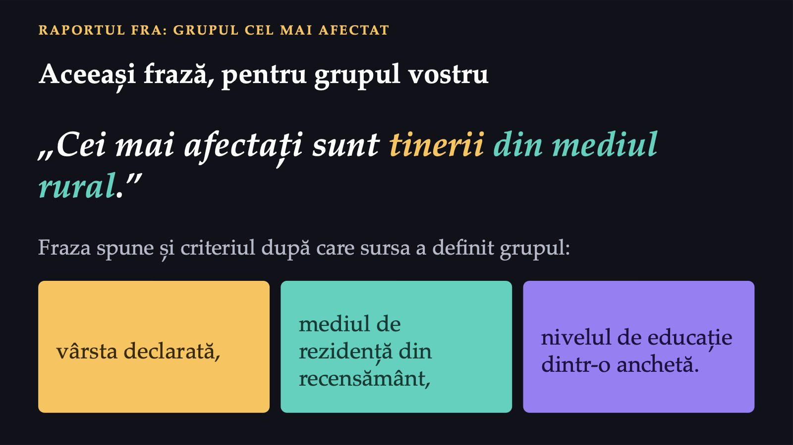
13 / 42Când echipa voastră scrie „cei mai afectați sunt tinerii din mediul rural” sau „femeile în vârstă din orașele mici”, cititorul trebuie să afle din aceeași frază după ce criteriu a fost definit grupul în sursa voastră.
2–4. Indicatorul, grupul de comparație, anul
![RAPORTUL FRA: GRUPUL CEL MAI AFECTAT 2–4. Indicatorul, grupul de comparație, anul Un singur indicator, același pentru cele două grupuri: speranța de viață la naștere. Grupul de comparație este numit: populația generală a aceleiași țări, în același an. Diferența este scrisă separat pentru femei și pentru bărbați. În cuvinte: dacă mortalitatea estimată pentru 2017 s-ar menține, femeile rome din România ar trăi în medie 70,2 ani, cu 8,6 ani mai puțin decât femeile din populația generală; bărbații romi, 66,3 ani, cu 5,3 ani mai puțin decât bărbații din populația generală.](diapozitive/LP04/014.jpg) 14 / 42
14 / 42Tabelul are tot ce cere o comparație corectă. Când scrieți cifra grupului vostru, o scrieți la fel: indicatorul, grupul de comparație, anul la care se referă.
Ce nu face tabelul
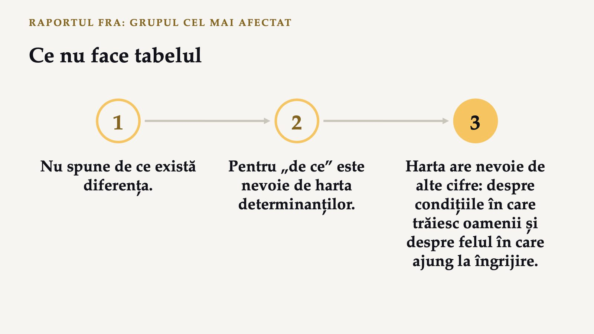
15 / 42O diferență de speranță de viață este un rezultat. Ce o produce se caută în altă parte, iar al doilea tabel dă câteva dintre aceste cifre.
Al doilea tabel descrie condiții, nu comportamente
![RAPORTUL FRA: GRUPUL CEL MAI AFECTAT Al doilea tabel descrie condiții, nu comportamente 58% 50% Asigurarea medicală: 58% dintre romii de 16 ani și peste intervievați în România; 50% dintre cei de 16–24 de ani FRA numește asigurarea medicală un determinant major al accesului la îngrijire. Pe hartă, asigurarea stă printre determinanții intermediari, la sistemul de sănătate, nu printre trăsăturile grupului. 16% Tot o condiție este experiența discriminării: 16% dintre respondenții care au folosit serviciile de sănătate în ultimele 12 luni.](diapozitive/LP04/016.jpg) 16 / 42
16 / 42Pe lângă sănătatea autoapreciată, al doilea tabel descrie condiții. Asigurarea și experiența discriminării sunt situații în care se află oamenii, nu comportamente ale lor.
5. Cât de sigură este cifra: speranța de viață
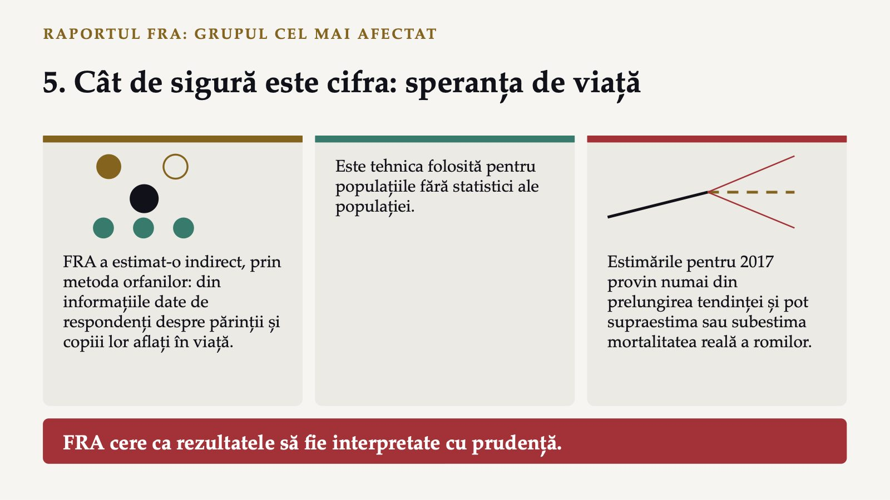
17 / 42Un raport bun își spune limitele metodei, iar cine preia cifra o duce mai departe împreună cu limita ei, scrisă chiar lângă cifră. De aceea, de fiecare dată când spunem cifra speranței de viață, spunem și că este o estimare indirectă pentru 2017.
5. Cât de sigură este cifra: asigurarea și discriminarea
![RAPORTUL FRA: GRUPUL CEL MAI AFECTAT 5. Cât de sigură este cifra: asigurarea și discriminarea Deducția noastră: cifra descrie o experiență declarată de respondenți, nu numărul faptelor de discriminare. Întrebarea despre asigurare nu deosebește lipsa asigurării de necunoașterea ei: un respondent care nu știe că este asigurat apare printre neasigurați. Ponderea celor discriminați se calculează numai din respondenții care au folosit serviciile de sănătate în ultimele 12 luni; FRA îi numește expuși riscului de discriminare.](diapozitive/LP04/018.jpg) 18 / 42
18 / 42Primele două limite le scrie chiar FRA. Ultimul rând nu mai este al FRA, ci al nostru: este o deducție și o spunem ca deducție.
Regula pentru harta voastră
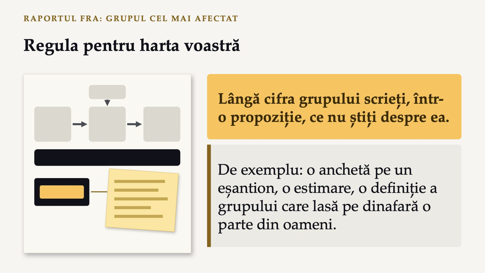
19 / 42Grupul cel mai afectat se descrie cu patru informații, cine este și cum a fost identificat, ce indicator, față de cine, din ce an, și cu limita metodei, scrisă lângă cifră.
Regula culturii fără vină
![RAPORTUL FRA: GRUPUL CEL MAI AFECTAT Regula culturii fără vină Tabelele citite azi descriu condiții și rezultate de sănătate: asigurarea, discriminarea la folosirea serviciilor de sănătate, o speranță de viață estimată mai mică. Nicăieri în aceste tabele nu apare un comportament atribuit romilor ca explicație. Pe hartă, grupul cel mai afectat se descrie prin condițiile în care trăiesc oamenii lui, nu prin comportamente atribuite unui grup etnic, unui sex, unei vârste sau unui cartier. Un comportament de risc intră pe hartă, dacă tema o cere, ca verigă modelată de condiții și cu sursa lângă el.](diapozitive/LP04/020.jpg) 20 / 42
20 / 42Regula nu ascunde nimic. Ea vine din fișa disciplinei, care cere ca inechitățile în sănătate să fie abordate fără stigmatizarea grupurilor. Un comportament de risc intră pe hartă, dacă tema o cere, ca verigă modelată de condiții și cu sursa lângă el.
O afirmație de verificat
![RAPORTUL FRA: GRUPUL CEL MAI AFECTAT O afirmație de verificat „Diferența de speranță de viață dintre romi și restul populației se explică prin stilul de viață al romilor.” ? 58% 16% Ce arată datele: tabelele FRA pentru România nu măsoară niciun comportament. Ele descriu condiții: 58% dintre respondenți au asigurare medicală, iar 16% dintre cei care au folosit serviciile de sănătate în ultimele 12 luni s-au simțit discriminați. Cadrul Organizației Mondiale a Sănătății (OMS): diferențele de stil de viață ar putea explica o parte din inegalitățile sociale în sănătate, dar cercetătorii nu sunt de acord asupra importanței lor.](diapozitive/LP04/021.jpg) 21 / 42
21 / 42Unii cercetători consideră stilul de viață o explicație suficientă; alții îl văd ca pe un factor care contribuie și care rezultă, la rândul lui, din cauze mai fundamentale. Afirmația de pe ecran dă drept explicație o trăsătură a unui grup etnic, pe care datele citite nu o măsoară. Cadrul Organizației Mondiale a Sănătății (OMS): diferențele de stil de viață ar putea explica o parte din inegalitățile sociale în sănătate, dar cercetătorii nu sunt de acord asupra importanței lor.
Principiul general
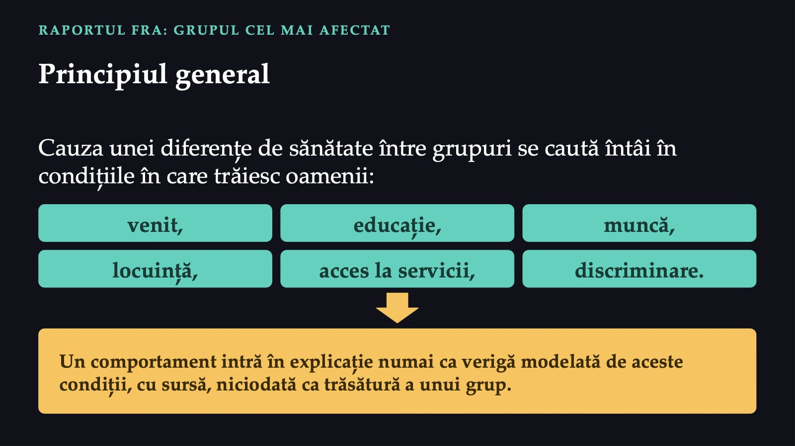
22 / 42Același principiu îl aplicați pe harta echipei, oricare ar fi tema: întâi condițiile, apoi, dacă tema o cere, comportamentul pe care ele îl modelează.
Trei termeni noi pentru hartă
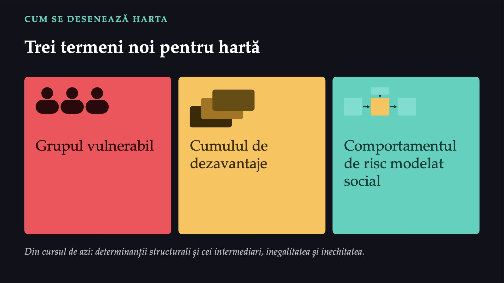
23 / 42Restul vocabularului îl aveți din cursul de azi. Cursurile 8 și 9, pe tema 8 a fișei disciplinei, „Factorii de risc comportamentali. Grupuri vulnerabile”, reiau pe larg acești termeni.
Grupul vulnerabil
 24 / 42
24 / 42Definiția vine din cadrul OMS din 2010; în 2019, OMS Europa scria că lucrarea Comisiei OMS pentru determinanții sociali ai sănătății are în continuare impact în toată lumea. Răspunsul echipei la întrebarea de pe ecran este ceea ce scrieți în căsuța grupului.
Cumulul de dezavantaje
![CUM SE DESENEAZĂ HARTA Cumulul de dezavantaje Mai multe dezavantaje apar la aceiași oameni și se întăresc unul pe altul; dezavantajul se poate acumula de-a lungul vieții. În raportul FRA, același grup are mai multe dezavantaje deodată: speranța de viață estimată mai mică, asigurarea declarată de 58% dintre respondenți, discriminarea la folosirea serviciilor de sănătate. Tabelele nu spun câți oameni le au pe toate în același timp: pentru asta ar fi nevoie de date la nivel de persoană. Pe hartă: săgeți care pleacă din aceeași poziție socială spre mai multe circumstanțe și se întâlnesc la același rezultat de sănătate.](diapozitive/LP04/025.jpg) 25 / 42
25 / 42Cadrul OMS descrie vulnerabilitatea diferențiată tocmai ca grupare și interacțiune a determinanților, după modelul acumulării riscului din cursul de azi. dezavantajul se poate acumula de-a lungul vieții. Pe hartă: săgeți care pleacă din aceeași poziție socială spre mai multe circumstanțe și se întâlnesc la același rezultat de sănătate.
Comportamentul de risc modelat social
 26 / 42
26 / 42Ce îl modelează poate fi prețul, programul de lucru, ce fac colegii și familia, ce se vinde lângă școală, cât de departe este un loc unde se poate face mișcare. Răspunsul la a doua întrebare este influența mediului social, a treia zonă a hărții.
Harta echipei, pe o singură pagină, de la stânga la dreapta
 27 / 42
27 / 42Harta pornește de la schema cauzală din seminarul trecut și adaugă ce lipsea: cine este cel mai afectat și ce îl face mai afectat.
Pașii hărții (1–4)
![CUM SE DESENEAZĂ HARTA Pașii hărții (1–4) 1 2 3 4 1 În dreapta: rezultatul de sănătate al temei, așa cum l-ați definit în fișa echipei. 2 În stânga: condițiile, adică determinanții structurali (venitul, educația, ocupația, genul, etnia), numai cele pe care le puteți lega de tema voastră. 3 La mijloc: circumstanțele intermediare (condițiile materiale, cele psihosociale, sistemul de sănătate) și comportamentele de risc asociate temei. 4 Lângă comportamente: influența mediului social (familia, colegii, școala, locul de muncă, publicitatea, prețurile, regulile).](diapozitive/LP04/028.jpg) 28 / 42
28 / 42Sistemul de sănătate înseamnă aici asigurarea, distanța, costul, așteptarea. Influența mediului social înseamnă cine sau ce face comportamentul mai ușor ori mai greu.
Pașii hărții (5–8)
 29 / 42
29 / 42Regula săgeților este cea din seminarul trecut: o săgeată înseamnă „vine înainte și poate contribui la”, nu „este singura cauză”, iar o săgeată fără sursă este o ipoteză și se scrie ca ipoteză.
Harta determinanților pentru tema echipei
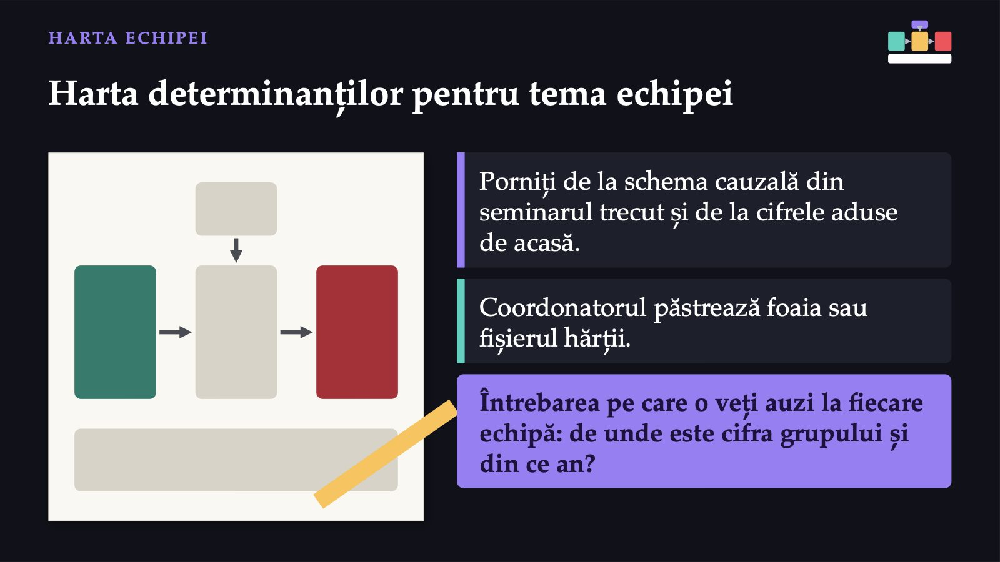
30 / 42Fiecare echipă desenează harta pentru tema ei, cu pașii pe care i-ați văzut. Aceeași întrebare o veți auzi la fiecare echipă: de unde este cifra grupului și din ce an.
Verificați harta înainte de schimb
![HARTA ECHIPEI Verificați harta înainte de schimb Cele patru zone: condițiile; circumstanțele intermediare și comportamentele; influența mediului social; rezultatul de sănătate. O zonă fără date este marcată „fără date”, cu motivul. Grupul cel mai afectat are o cifră dintr-o sursă oficială, cu anul, numitorul și sursa. Lângă cifra grupului este scrisă limita ei. Săgețile merg de la ce vine înainte la ce vine după; cel puțin una are sursa scrisă lângă ea, celelalte sunt scrise ca ipoteze. Căsuța grupului descrie condiții, nu comportamente atribuite grupului.](diapozitive/LP04/031.jpg) 31 / 42
31 / 42Sunt aceleași verificări pe care le faceți înainte de trimiterea hărții. Dacă tema nu are date pentru o zonă, zona rămâne pe hartă, marcată „fără date”, cu motivul.
Schimbul hărților
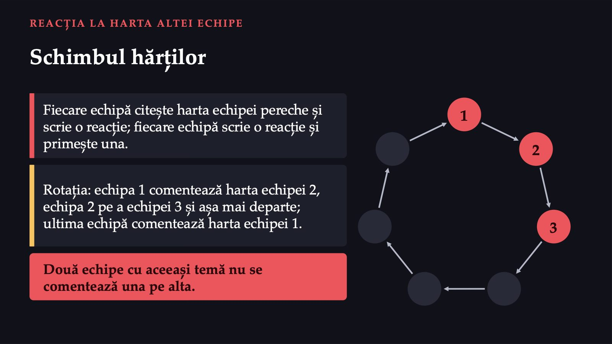
32 / 42Reacția se scrie așa cum un coleg comentează un raport înainte ca acesta să plece la decident: precis, cu argumente, fără verdict.
Reacția are cinci părți
 33 / 42
33 / 42Prima parte a reacției spune ce este bine sprijinit și de ce; abia apoi vin lipsurile și verificările. Reacția nu dă o notă și nu dă un verdict.
150
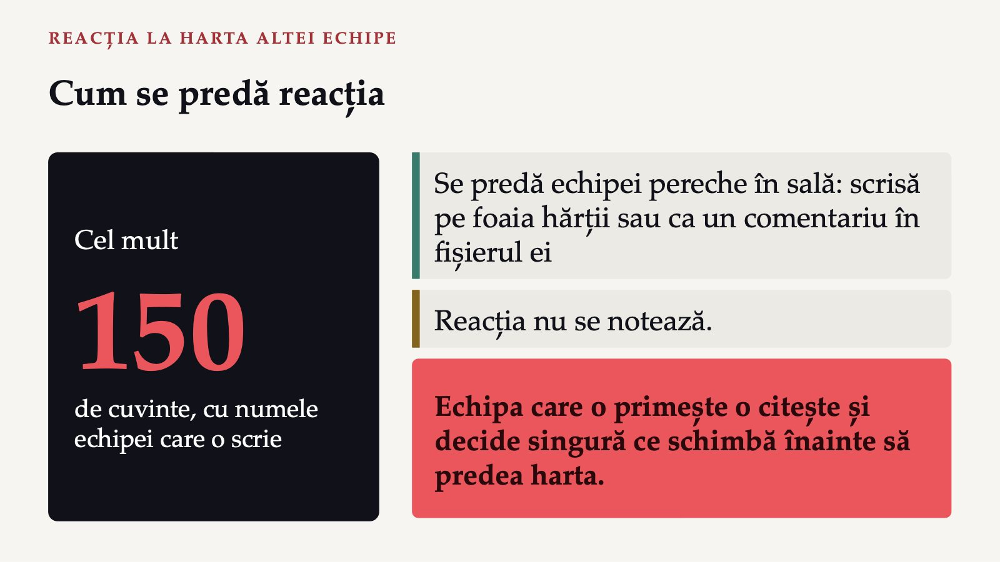
34 / 42Decizia despre ce se schimbă în hartă rămâne la echipa care a făcut-o.
Reacția primită
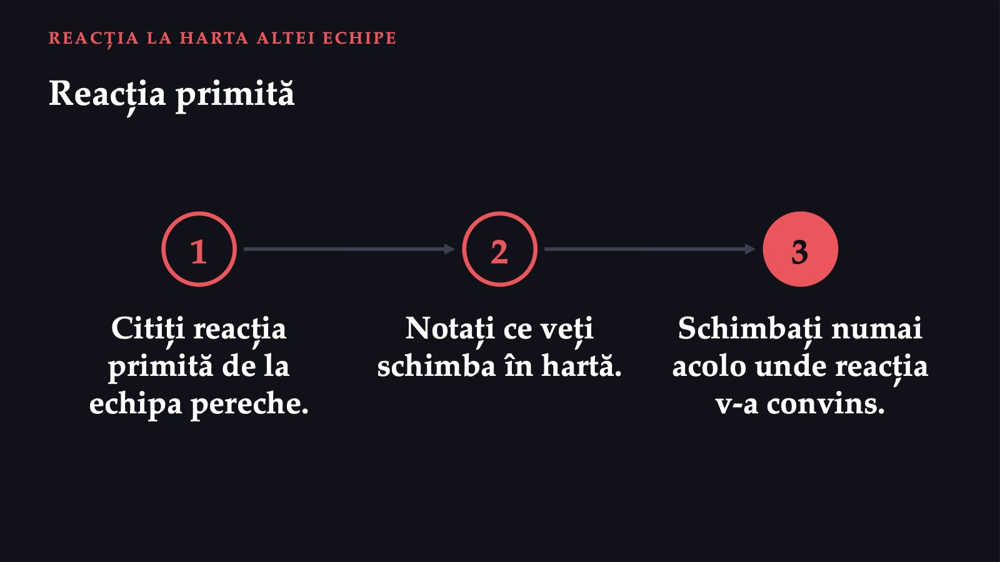
35 / 42Harta pe care o predați este cea refăcută după reacție, acolo unde reacția v-a convins.
Ce au găsit reacțiile
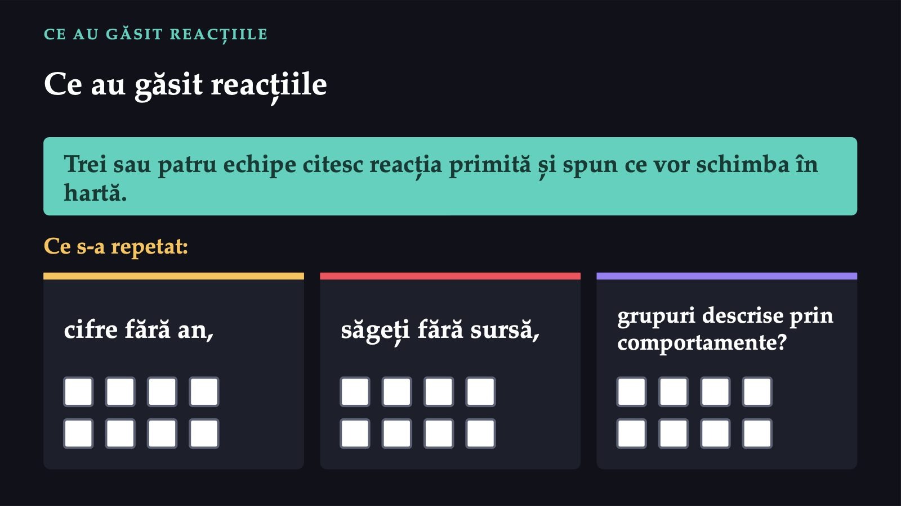
36 / 42Ascultăm câteva reacții și căutăm împreună ce s-a repetat. Ce se repetă la mai multe echipe merită verificat pe fiecare hartă înainte de trimitere.
Ce rețineți
![CE AU GĂSIT REACȚIILE Ce rețineți Grupul cel mai afectat se descrie cu patru informații (cine este și cum a fost identificat, ce indicator, față de cine, din ce an) și cu limita metodei, scrisă lângă cifră. Un grup este vulnerabil prin poziția lui socială și prin condițiile în care trăiește; îl descrieți prin aceste condiții, nu printr-o trăsătură a oamenilor din el. Dezavantajele se adună la aceiași oameni, se întăresc unul pe altul și se pot acumula de-a lungul vieții. Comportamentele de risc stau pe hartă între condiții și boală, nu la începutul lanțului. O reacție bună spune ce susțin datele, ce lipsește și ce trebuie verificat, cu argumente și fără verdict.](diapozitive/LP04/037.jpg) 37 / 42
37 / 42Acestea sunt ideile pe care le duceți în harta de acasă și în cursurile 8 și 9. îl descrieți prin aceste condiții, nu printr-o trăsătură a oamenilor din el. O reacție bună spune ce susțin datele, ce lipsește și ce trebuie verificat, cu argumente și fără verdict.
Ce nu putem afirma din raportul FRA
![CE AU GĂSIT REACȚIILE Ce nu putem afirma din raportul FRA Speranța de viață a romilor este o estimare indirectă, prelungită până în 2017, care poate supraestima sau subestima mortalitatea reală. Sondajul îi cuprinde pe cei care se declară romi, de 16 ani și peste, din gospodăriile private acoperite de sursele de eșantionare; nu descrie toți romii din România. Ponderea celor cu asigurare medicală nu îi deosebește pe cei neasigurați de cei care nu știu că sunt asigurați. Ponderea celor discriminați descrie, după deducția noastră, experiența declarată de respondenți, nu numărul faptelor de discriminare. Tabelele nu arată câți oameni au mai multe dezavantaje în același timp.](diapozitive/LP04/038.jpg) 38 / 42
38 / 42Numărul romilor din România și politicile publice pentru incluziunea lor nu au fost verificate pentru acest seminar și nu intră în discuția de azi. nu descrie toți romii din România. Tabelele nu arată câți oameni au mai multe dezavantaje în același timp.
Rezolvarea se vede în formularul fișei, după ce o predați.
Rezolvarea se vede în formularul fișei, după ce o predați.
Înainte de trimitere
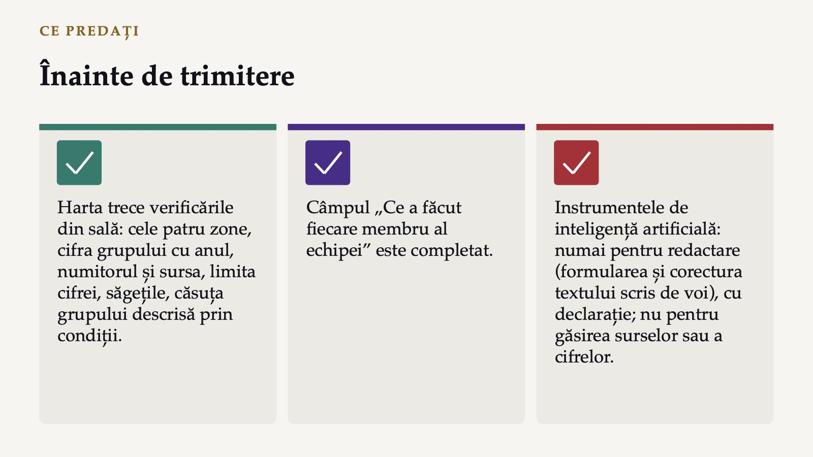
40 / 42Regula despre instrumentele de inteligență artificială este cea din primul seminar: datele și sursele se iau de la sursa primară și se verifică acolo.
Kahoot
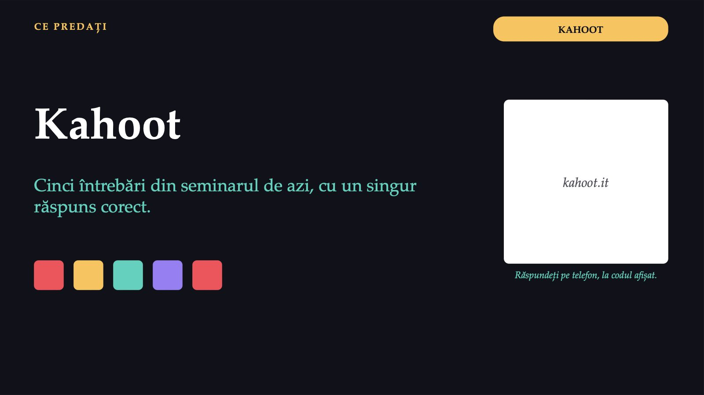
41 / 42Încheiem cu cinci întrebări, pe telefon, la codul afișat. La fiecare întrebare alegeți o singură variantă.
Bibliografia seminarului
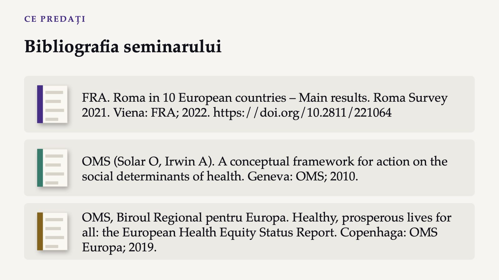
42 / 42Raportul FRA și cele două documente ale OMS sunt pe pagina seminarului, cu adresele lor.
Săgeți sau spațiu: navigare · O: vedere de ansamblu · N: notele prezentatorului · F: ecran complet · Esc: închidere